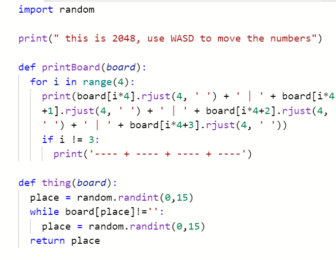

We offer three (3) introductory courses in the computer science track: Scratch, Python, and Java. Classes take a project-based learning approach as students will learn through collaborating and working with peers on mini-projects. Classes will be formed so that students are with students in a similar age group as them so that all students in a class can move at around the same pace.
students who have already learned Python during the spring 2020 session, OR
students in grades 6-8 who have prior coding experience AND have strong mathematical ability
Scratch
Our introductory Scratch course is recommended for students in grades 2-5 or students in grades 6-8 who would prefer a block-based language. We do not encourage students in grades K-1 to take this class unless they have previous experience with Scratch as well as strong mathematical and reading ability. Ideal for students who have no coding experience, this class will provide a strong foundation to simple programming logic through hands-on activites and games. Through interactive group work, students engage in team problem-solving, developing skills in both collaboration and comuter science. This course will go in depth to all the Scratch functions and will equip students with the skills necessary to make projects on their own. Key projects in this course include a guess my number game (with sensing), a maze game, choose your own adventure game.
Module 1: Scratch environment (website overview)
Module 2: Motion (coordinate plane overview)
Module 3: Looks and Sounds Complete Overview
Module 4: Loops
Module 5: Conditionals with Sensing
Module 6: Conditionals with Operators
Module 7: String Manipulation from User Input
Module 8 : Variables
Module 9: Clones and Broadcasting
Module 10: Blocks
Ana, Grade 3
Emma and Jacob, Grade 2
Hee-Seo, Grade 4
Python
Our introductory Python course is recommended for highly motivated 6-8th graders, or those who have taken the gbSTEM introductory Scratch course during last semester. The course will cover the fundamentals of Python and will serve as an introduction to text-based languages. Through project-based learning, students learn valuable programming skills by working on mini-projects, often collaborating with students in their class. These projects serve the purpose of developing skills in programming logic, including understanding of common algorithms like "finding the largest number" and "summing all numbers in a list". Projects in this course include hangman, tic-tac-toe, rock-paper-scissors, and a shopping game.
Module 1: Introduction to Python
Module 2: Variables and Data Types
Module 3: If-Else Statements
Module 4: String Methods
Module 5: Functions
Module 6: While Loops
Module 7: For Loops
Module 8: Lists
Module 9: 2D Arrays and Nested Iteration
Module 10: Dictionaries
Module 11: Introduction to Python Libraries
Liam, Grade 6
Adam, Grade 8

Java
Our introductory Java course is recommended for students in grades 6-8 with previous text-based programming experience and a strong foundation in math through operations with decimals, fractions, and negative numbers. The course provides students with a strong foundation in one of the most common programming languages used today. It approaches Java from a functional programming perspective, giving students a true understanding of how the internal structures of Java function. Through projects and games like Mastermind as well as thorough coverage of foundational computer science topics such as data structures and algorithms, this course will set students well on their way to becoming skilled Java developers.


.png)
.png)
.png)

.png)